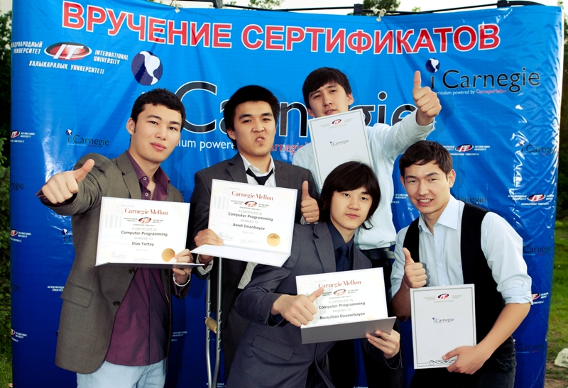

Об университете
Международный университет информационных технологий
«В рамках СЭЗ создаются благоприятные условия для творческой и продуктивной работы в сфере инноваций высших учебных заведений, в том числе Международного университета информационных технологий, профессионально-технических образовательных учреждений, научно-исследовательских институтов», - из Указа Президента Республики Казахстан от 18 августа 2003 года № 1166 «О создании специальной экономической зоны «Парк информационных технологий».
Учредителями первого казахстанского IT-Университета являются АО «Национальный инфокоммуникационный холдинг «Зерде», Общественный фонд "Фонд Образования Нурсултана Назарбаева" и Университет международного бизнеса (UIB). Система менеджмента качества соответствует требованиям стандарта ISO 9001:2008 и сертифицированна в декабре 2011 года органом по подтверждению сертификации ТОО Eurosia MS.
Первый казахстанский IT Университет – ведущее учебное заведение в Центрально-Азиатском регионе. Международный IT Университет занимает лидирующую роль в подготовке квалифицированных, международно признанных специалистов для IT-индустрии региона. Международный университет информационных технологий создан в тесном сотрудничестве с iCarnegie – структурным подразделением университета Сarnegie Mellon (США), с лучшей мировой практикой и образовательными программами. Университет Сarnegie Mellon признан ведущим в мире по: алгоритмам, компьютерным сетям, распределенным вычислениям, языкам программирования, робототехнике, компьютерной лингвистике, разработке программного обеспечения.
Миссия, видения, направления
Миссия Университета: мы создаем уникальные условия для свободного творчества и становления новой личности!
Видение Университета: к 2020 году АО «Международный университет информационных технологий» будет представлять собой научно-исследовательский университет с мировым рейтингом, осуществляющим подготовку международно-признанных IT-специалистов в системе колледж-бакалавриат-магистратура-PhD и являться центром инноваций и науки в области ИКТ центрально-азиатского региона.

Стратегическое направление: Совершенствование образовательного процесса
Цель: становление и развитие академической структуры Университета, эффективность которой позволит повысить качественный уровень преподавания и успеваемость студентов.
Задачи:
1) формирование и развитие системы трехступенчатого образования: бакалавриат- магистратура- докторантура;
2) продвижение к академической свободе;
3) выход на позиции одного из ведущих Университетов постсоветского пространства в ИКТ образовании;
4) налаживание эффективного взаимодействия с потенциальными работодателями.
Курсы iCarnegie
Программа сертификации iCarnegie SSD • Программа сертификации iCarnegie SSD это комплексная программа обучения и образования, использующая самые современные инструменты и опыт разработки программного обеспечения, разработанный благодаря уникальному сотрудничеству iCarnegie с Университетом Карнеги Меллон. • Студенты, получившие сертификат iCarnegie SSD являются лучшими в этой области по всему миру — это обеспечено качеством учебной программы разработанной и поддерживаемой iCarnegie и Карнеги Меллоном. • Обладатели сертификатов SSD имеют большой опыт, современную и очень высокую квалификацию.  • Главное отличие обладателей сертификатов iCarnegie SSD в том, что они на практике использовали то, о чем студенты других программ только читали.
Библиотека
Библиотека Международного университет информационных технологий была организована в 2009 году как структурное подразделение вуза. Фонд библиотеки состоит из учебной, учебно-методической и научной литературы на традиционных и электронных носителях на трех языках: казахском, русском и английском. Учебный фонд комплектуется литературой ведущих казахстанских и российских издательств Раритет, Фолиант, Экономика, Бастау, Высшая школа, ИНФРА – М, Горячая линия – Телеком, Лань.
Литература на английском языке приобретается у таких известных зарубежных издателей, как Cambridge University Press, Oxford University Press, Pearson, McMillan, McGrow-Hill.

Общий фонд библиотеки составляет 309 970 тыс. единиц. По структуре фонд состоит из книг, периодических и справочных изданий, электронных ресурсов. Автоматизация библиотечных процессов осуществляется по библиотечной программе КАБИС (Казахская Автоматизированная Библиотечно-Информационная Система).
Справочно-библиографический аппарат библиотеки состоит из фонда библиографических и справочных изданий, электронного каталога, электронной картотеки газетно-журнальных статей, картотеки трудов ППС МУИТ и полнотекстовой базы данных собственной генерации, доступные всем пользователям Университета.